Regular workshops
Hands-on, a few hours, in small groups: from a dropped export to a checked cohort, a look at every hospital and patient, and a dataset for a first model. We bring public data, you bring your questions.
Drop a hospital export onto the page. It is imported, checked and annotated, and the plots are ready before you have opened a notebook. Millions of observations fit on a laptop, and the same workflow repeats for every new dataset.

Six things the web app does for you on day one. Each of them is also a CLI command and a Python function, for scripts and for the cluster.
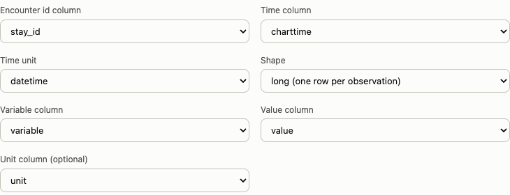
Drop a folder of CSV or Parquet files, a FHIR export or an ICU database layout. Columns, time unit and units are recognized, and you confirm the mapping before anything is written.
See it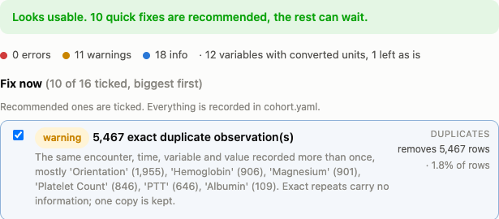
Mixed units, values out of range, duplicates, numbers stored as text and timestamps before admission are reported with a fix ticked. Every fix is recorded in the cohort.
See it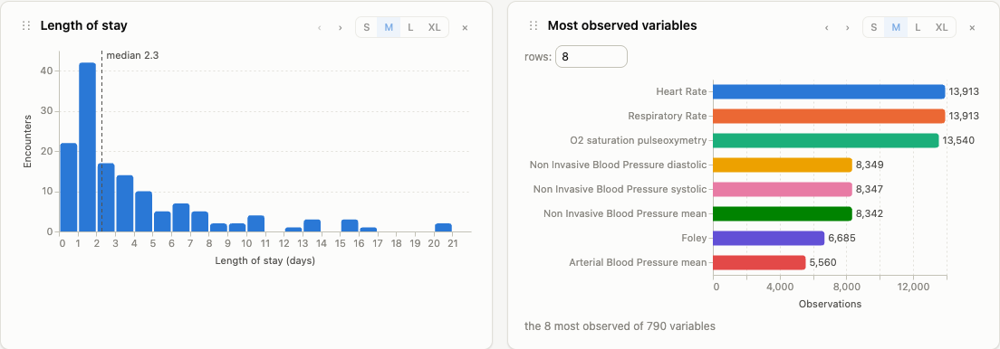
Clinical time series suggest the plots worth having: the overview, distributions, coverage over time and a page per patient. They come out of the box.
See it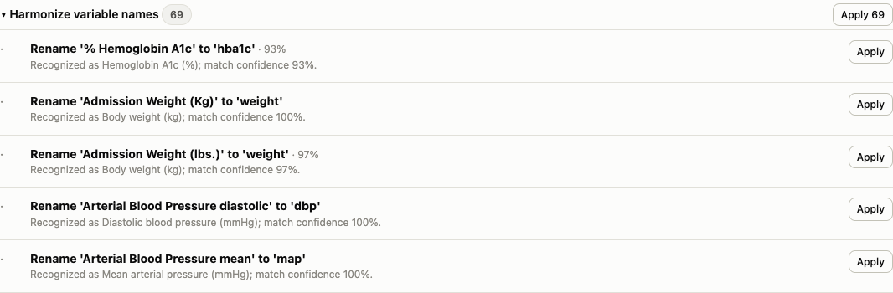
Local names map to LOINC and UCUM, diagnoses are grouped across ICD-9 and ICD-10, drugs get RxNorm and ATC. Site-specific names go into a mapping file, so it is reproducible.
See it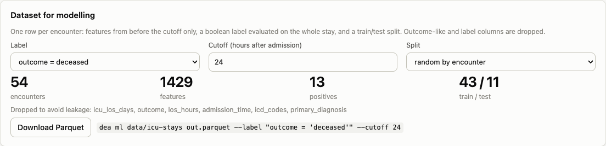
An encounter-level (X, y) with a prediction cutoff, a leakage guard and a split by encounter, patient or whole hospital. Sub-cohorts keep their lineage.
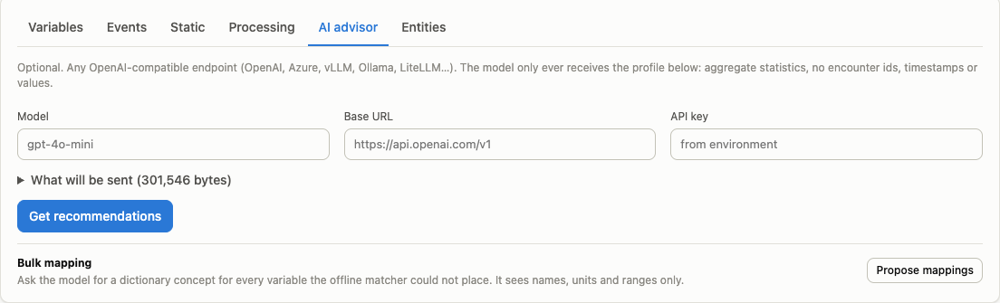
Any OpenAI-compatible endpoint, local or hosted, proposes mappings and processing defaults from aggregates only. With MCP, local AI tools can be attached to the DEA.
See itOne export, start to finish: 140 ICU stays with 300,000 observations from a public, de-identified ICU database. Click a screenshot to enlarge it.
A folder, a single table or a zip; for a large folder that is already on the machine you paste the path instead. The import reads a sample and shows what it found: the layout, the encounter and time columns, the variable, value and unit columns.
You correct the mapping if it guessed wrong, add a static table with age, sex and outcome if you have one, and run the checks.
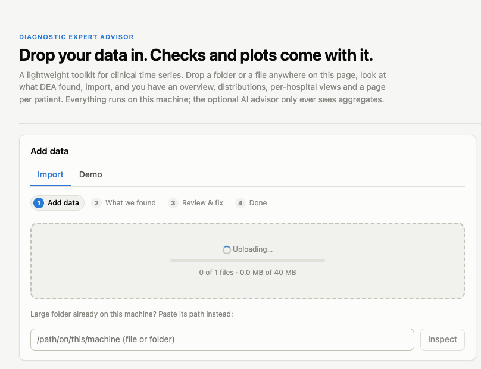
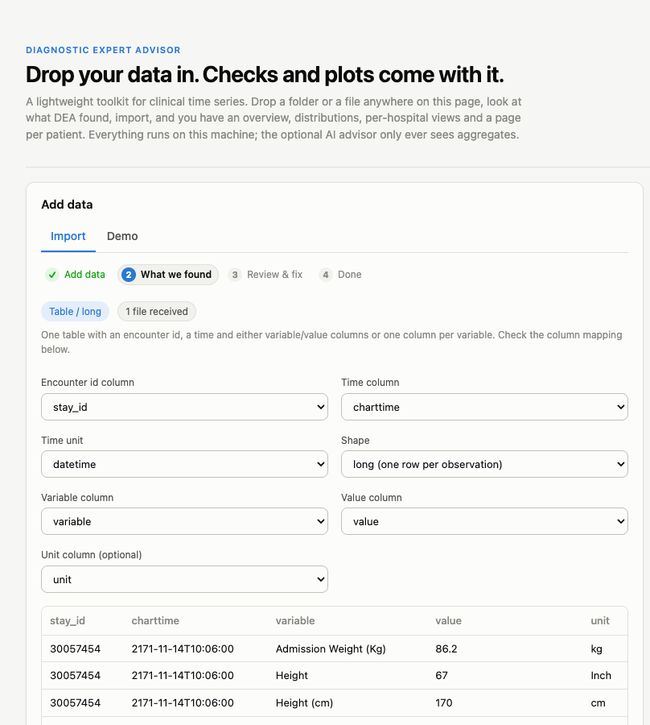
One line says how the data looks, then the findings come biggest first, the safe ones already ticked. Exact repeats of the same encounter, time, variable and value carry no information, so one copy is kept.
Conflicting values at the same timestamp are a different thing: two lab runs or a correction. Nothing happens to them until you pick how to resolve them, for all at once or row by row.
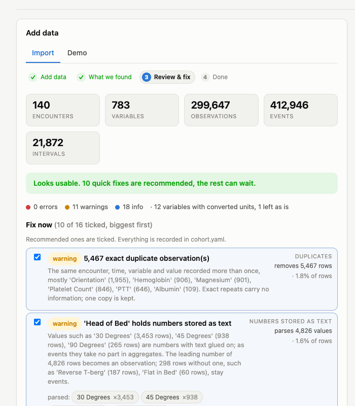
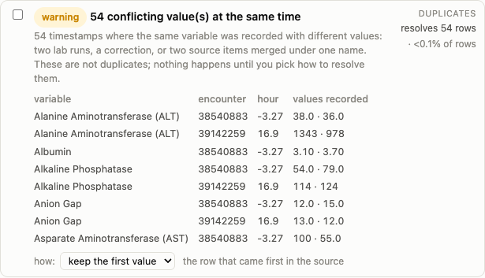
The profile page lists what it recognized: Heart Rate becomes heart_rate with its LOINC code and UCUM unit, three spellings of glucose become one variable. Each rename shows the concept and a confidence, and you apply them one by one or all at once.
Diagnoses arrive as ICD-9 and ICD-10 mixed. They are grouped into dx_ columns such as dx_sepsis, so both versions land in the same filter.
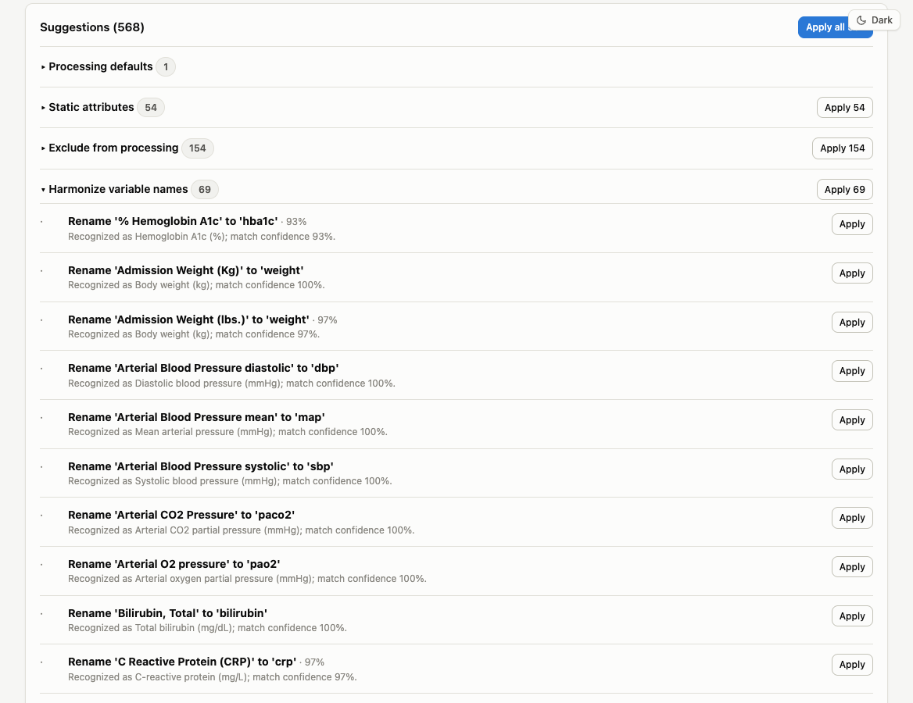
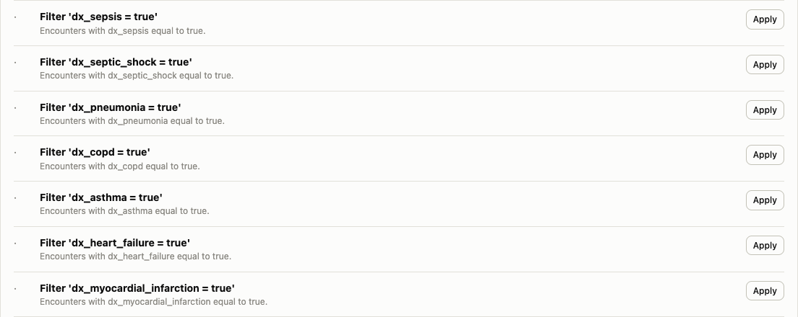
Every unit fix shows the data before and after, with the plausible range of the concept shaded. Here a fraction recorded in percent moves back into 0.21 to 1.
On the overview, any filter turns into a comparison: the selected encounters against the rest of the cohort, on shared bins, for the most observed variables.
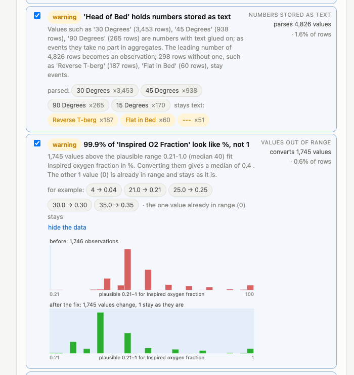
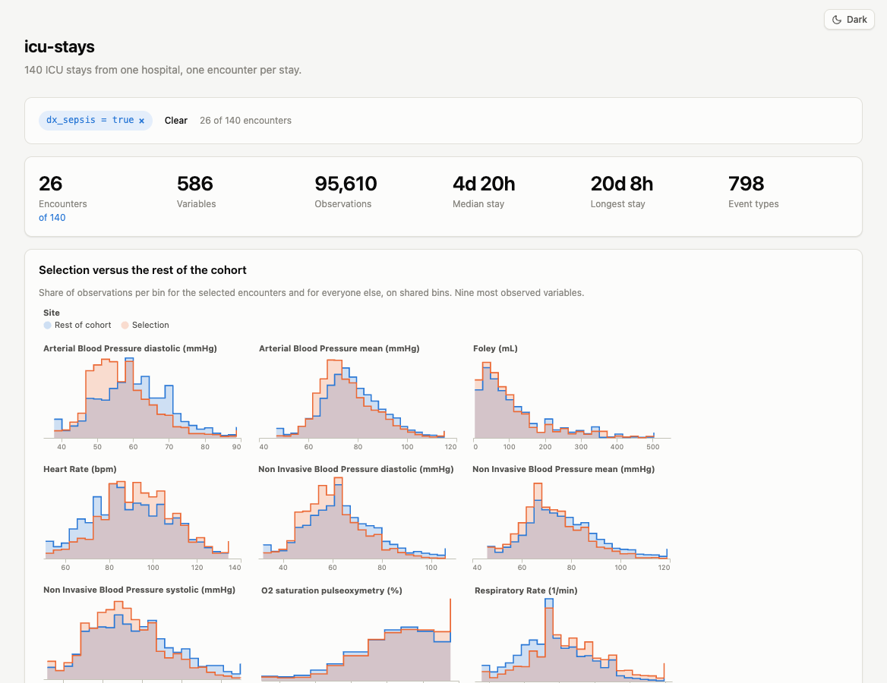
Infusions, ventilation and procedures are spans on a rail, text values are events, and each signal has its own scale. The grey band behind a signal is the hourly median and interquartile range of the whole cohort, so an unusual value is unusual at a glance.
Raw observations or a grid of your choice; hovering aligns all panels in time.
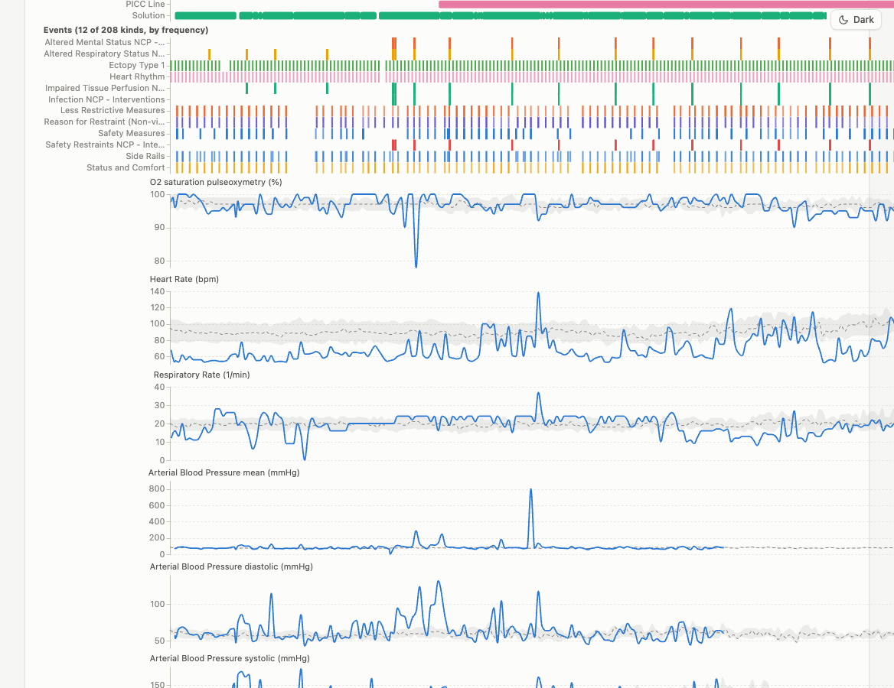
Pick a feature, an operator and a value; the count updates as you type. Save the rule as a filter or a tag, or carve out a sub-cohort with its parent and rule recorded.
The dataset card turns the selection into training data: a label evaluated on the whole stay, features from before the cutoff only, and a split. Outcome-like columns and the label's own columns are dropped, and it says which.
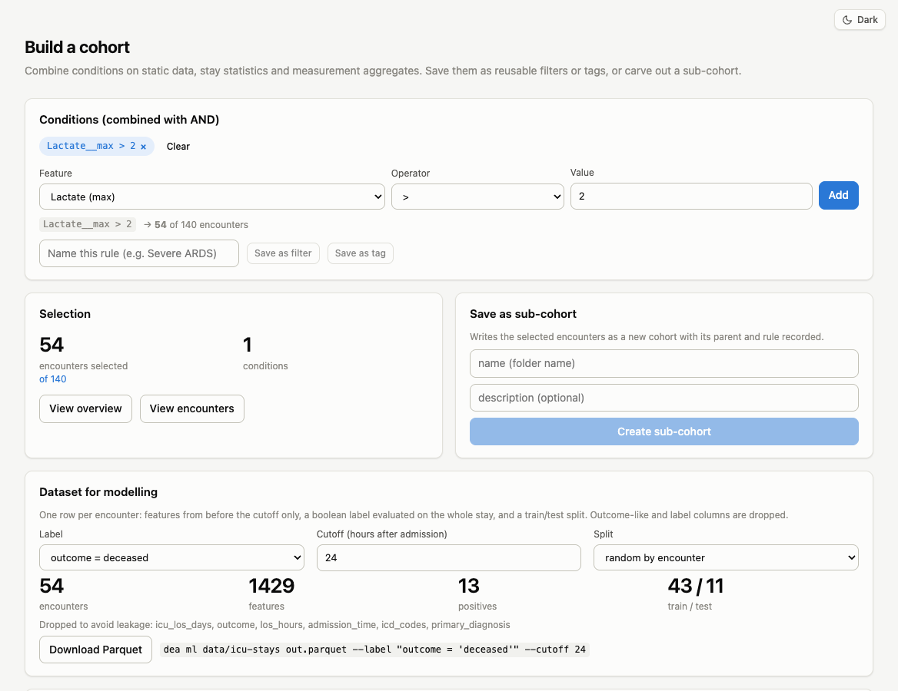
Observations, events and intervals are one long table each, stored as Parquet bucketed by encounter and read lazily with Polars. Only what is needed gets loaded, so a large cohort is not much slower than a small one, and per-encounter code runs the same way on a laptop and on a SLURM cluster.
The source is scanned lazily, units are converted per row, and the checks run on a streaming pass plus a sample.
Encounters are hashed into buckets, each file sorted by encounter and time, so a lookup skips most of the data.
Aggregates per variable, hours per intervention, the static columns. Filters and tags are SQL over this table.
Polars or pandas frames, FHIR R4 resources, a standalone HTML report, or a dataset for your model.
You need Python 3.11 or newer and uv. The install pulls the web app and every optional part. After dea serve, everything else happens in the browser.
# install the DEA as a tool uv tool install "dea[all] @ git+https://github.com/DeastinY/diagnostic-expert-advisor" # start the server dea serve --data-dir ~/dea-data → http://127.0.0.1:8000 → drop your export onto the page
dea update brings the install up to date. The getting-started guide has what each input layout needs and how to run the DEA on a shared machine.
A cohort you built in the UI is a folder in the data directory. Load it by its name, ask for a dataset, and hand the frames to any library.
from dea.io import load_cohort from dea.ml import make_dataset import xgboost from sklearn.metrics import roc_auc_score cohort = load_cohort("data/my-cohort") # the name from the UI ds = make_dataset(cohort, label="outcome = 'deceased'", cutoff_hours=24, split="site") X, y = ds.train() model = xgboost.XGBClassifier(n_estimators=200, max_depth=3) model.fit(X, y) X_test, y_test = ds.test() print("AUC", roc_auc_score(y_test, model.predict_proba(X_test)[:, 1]))
The three things that go wrong by hand are built in, and the same settings exist on the dataset card in the UI and on the command line.
outcome = 'deceased', or any rule over the feature table.X and y are a Polars frame and series; ds.to_pandas() and ds.to_numpy() are there for libraries that want those. XGBoost and scikit-learn are not part of the DEA: uv pip install xgboost scikit-learn.With the Simulation and Data Lab Digital Patient (SDL DP) at NHR4CES we run regular workshops on the DEA, give demonstrations on your own data, and help with the setup, on a laptop or on the cluster.
Hands-on, a few hours, in small groups: from a dropped export to a checked cohort, a look at every hospital and patient, and a dataset for a first model. We bring public data, you bring your questions.
We go through the DEA with you on your own export, remotely or on site: what it recognizes, what the checks find, what the fixes do, and how far you get before you need any code.
Installation, the data directory, a shared instance with a token, the SLURM backend on NHR4CES hardware, and the way from a hospital export to the first import.
No. Everything runs locally. The optional AI advisor only gets a profile of the cohort, meaning aggregate statistics per variable, never encounter ids, timestamps or individual values. The web app shows you exactly what would be sent before you send it.
No. Start the server, drop your data onto the page and you get the checks, the suggestions and all plots without a notebook. When you want to script things, the CLI and the Python API do the same.
As a tool: uv tool install "dea[all] @ git+https://github.com/DeastinY/diagnostic-expert-advisor". A clone with uv sync works as well. dea update brings either one up to date, dea serve --auto-update does it before every start, and the app tells you in the sidebar when there is something new.
Yes. With the SDL Digital Patient at NHR4CES we run regular workshops, give demonstrations on your own data and help with the setup, from a laptop to the SLURM backend on the cluster. Write us an email.
Millions of observations are the normal case. On a synthetic cohort of 2,000 encounters and 54 million observations the feature table takes about three seconds and looking up a single encounter around 20 ms, with less than 2.5 GB of memory. Large gzipped tables are converted to Parquet once and read lazily after that.
You need an encounter id, a time (timestamps or offsets since admission) and either variable/value columns or one column per variable. Non-numeric values become events. A separate table with static data is optional. FHIR R4 resources and the common ICU database layouts are recognized as such.
Yes. A static column that names the site turns on the per-site comparison: case mix, distributions, coverage, sampling and findings whose fixes only apply to one site. When building a dataset you can hold out whole hospitals as the test set.
Alpha. It has been run on the public demo of a large ICU database (140 stays, 300,000 observations, the data in the screenshots), on synthetic cohorts over several hospitals and on the SMART on FHIR sample data with 30+ organizations. The full database and the SLURM backend on a real cluster are the next steps.